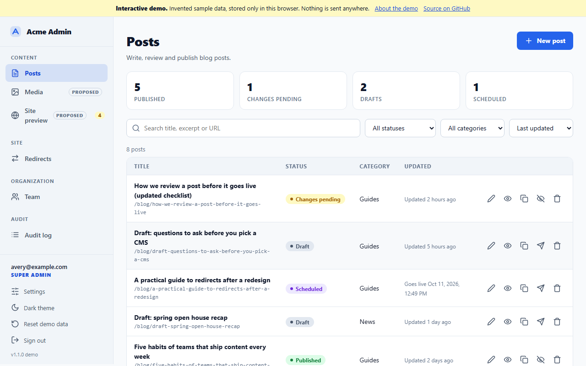
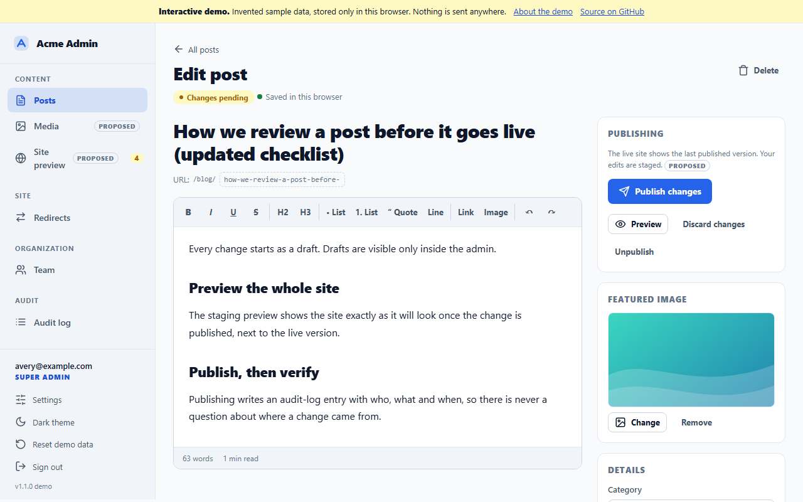
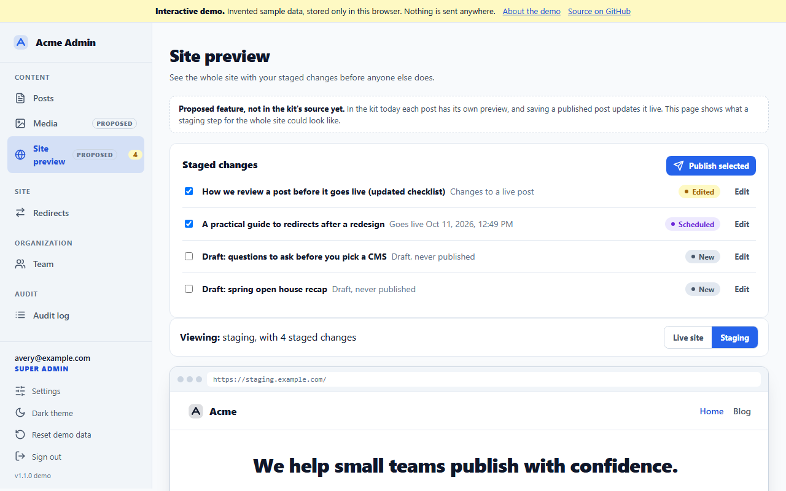
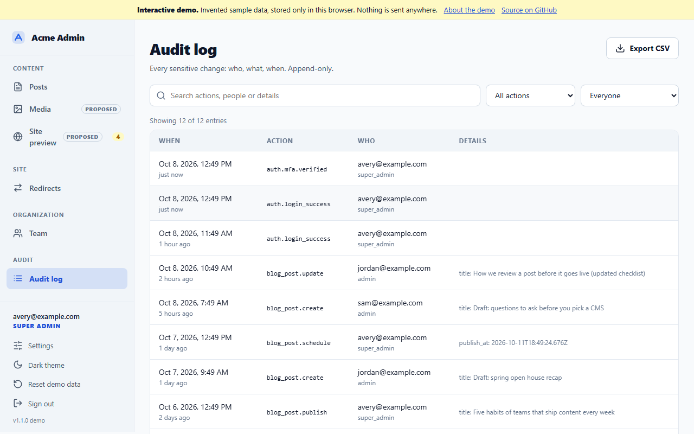
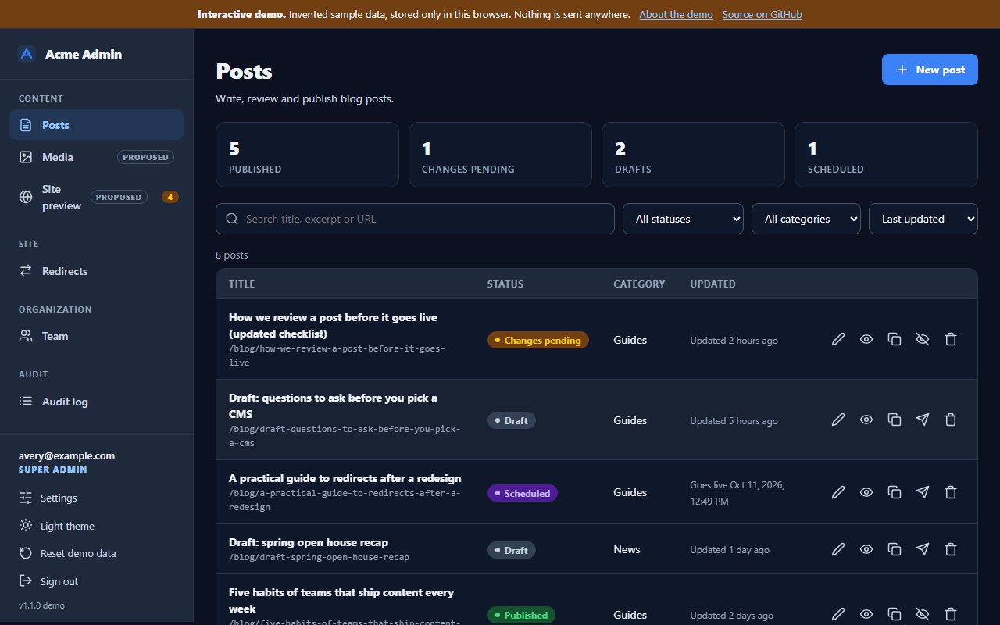
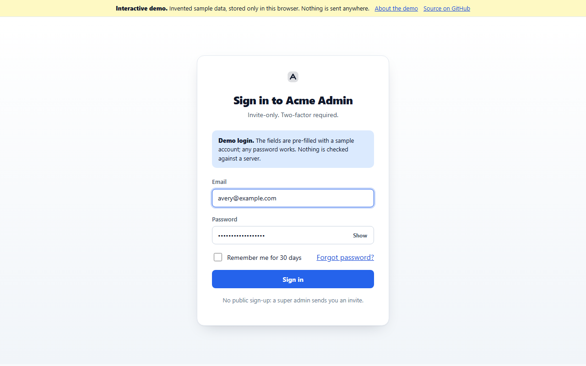
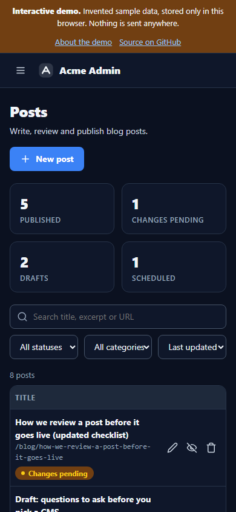
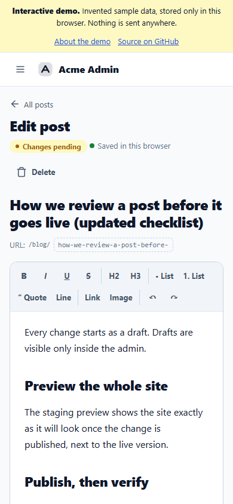

Website CMS Kit
Try the admin in your browser
A working demo of the kit's admin: invite-only sign-in with two-factor, a posts list with search and filters, a rich-text editor with autosave, a staging preview of the whole site, media, team, redirects and a full audit log.
Open the interactive demoThe sign-in form is pre-filled and any password works. The two-factor code is 123456.
Sample data only. The demo runs entirely in your browser. Everything you see is invented, it is saved only in this browser's local storage, and nothing is sent anywhere: there is no server, no database and no real account. The production version of every screen is the Next.js and Supabase code in the source tree on GitHub.
What it looks like






On a phone


A five-minute walkthrough
- Sign in. Press Sign in, then enter
123456. (The two-factor step also shows a sample recovery code: using one turns two-factor off and sends you to set it up again, the same as the real kit.) - Edit a post. Open "How we review a post before it goes live". Change a heading, add a link, insert an image. The "Saved in this browser" note shows autosave working.
- Preview before anyone else sees it. Press Preview for the one post, or open Site preview (proposed) to see the whole site with every staged change. Flip between Live site and Staging.
- Publish. Publish from the editor, schedule a post for later, or publish selected changes from Site preview.
- Media. Upload an image in the media library (proposed; it stays in your browser, resized), add alt text, and use it as a featured image.
- Team. Invite someone, change a role, turn someone's access off. Try to demote the last super admin: the kit refuses.
- Audit log. Every step above is there, with who, what and when. Filter it and export a CSV.
- Redirects. Add a redirect, test a path against your rules, and see loops and chains caught before they ship.
- Start over. "Reset demo data" in the sidebar puts everything back.
In the kit today, and what is proposed
Most of the demo mirrors code that is in the kit's source today. A few screens preview features that are proposed but not built yet; the demo marks each one Proposed.